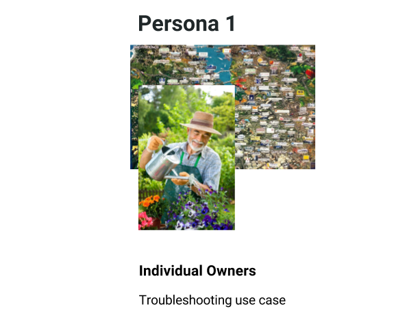
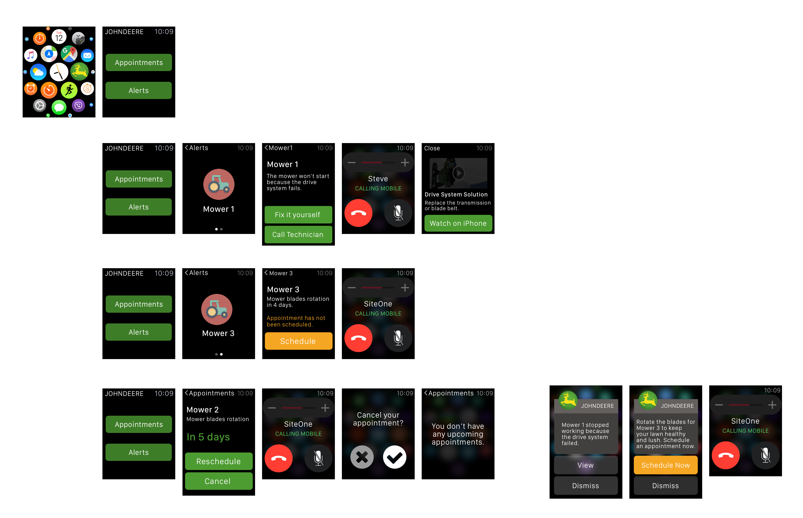

Phase 4. Last Design Iteration - Rapid Prototyping
After the second design iteration, we realized we had to redefine our target users and iterate faster on our prototype in order to deliver on time.

Based on the limit amount of time we had, we decided to go back to individual owners, who have a simpler issue with the product - troubleshooting.

During the last two weeks of the project, we created 3 rapid prototypes and ran testing with 5-7 target users to help us improve the product -
Provided 2 options for troubleshooting based on users' feedback - Fix it yourself or Call Technician to schedule an appointment.
Changed the main theme color to green and used the color orange for the Schedule Now button to encourage users to schedule appointments with Dealers
The Final Prototype
After create the 3 rapid prototypes and usability testing, here's the final prototype for this project -